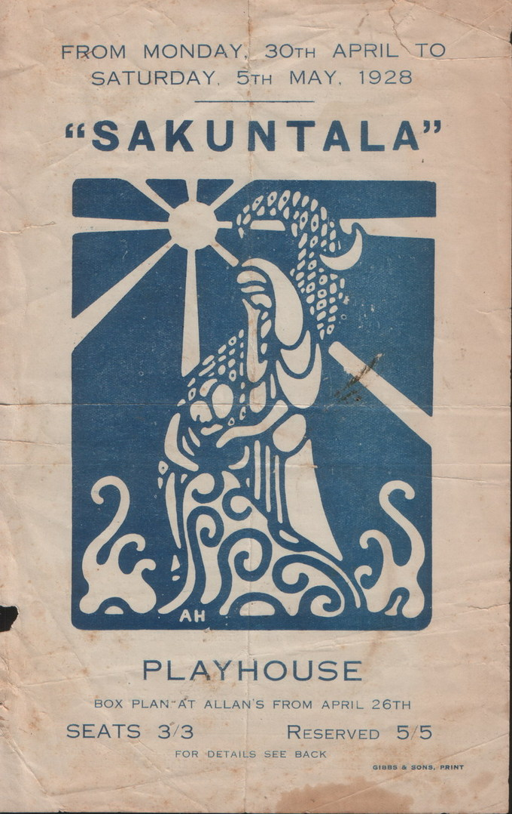
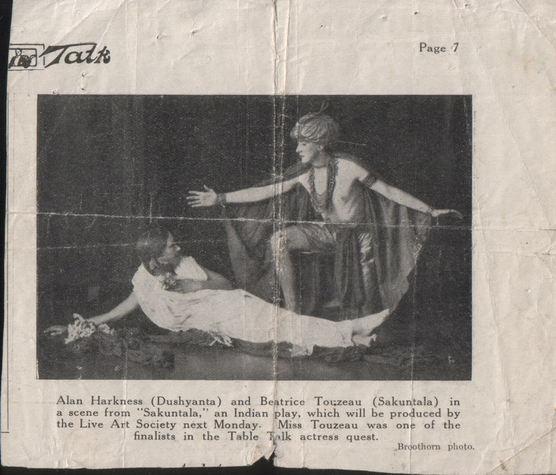
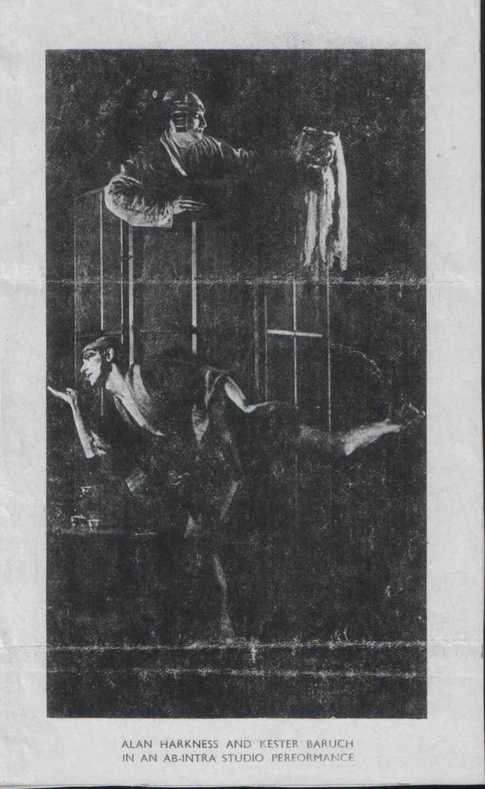
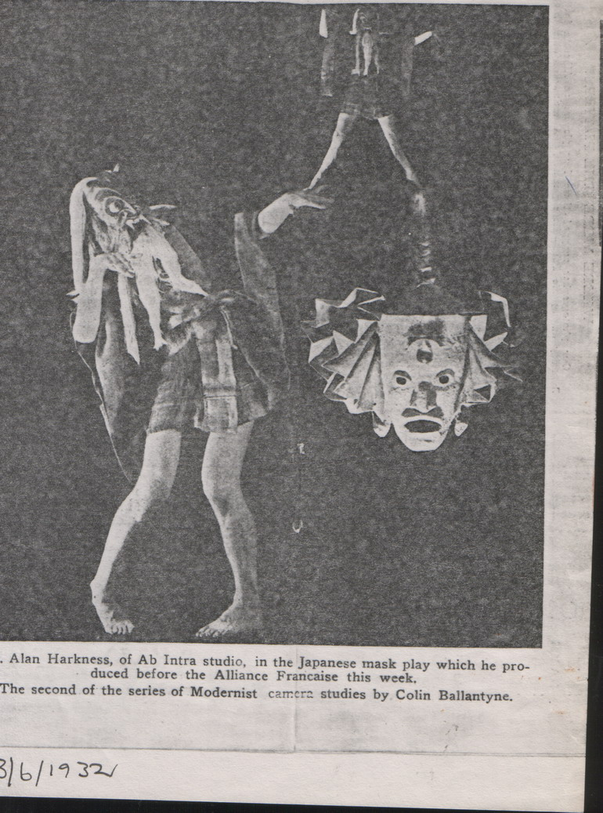

Prior to the formation of The Ab-Intra Studio, Alan Harkness worked with the Live Art Society in their 1928 production of Sakuntala, the Indian classic by Kalidasa.
The Live Art Society: Sakuntala, 1928
Review of SakuntalaReview of Sakuntala

Programme cover, 1928Programme: production creditsProgramme: cast listProgramme noteProgramme note: the musicProgramme: inside back coverReview of Sakuntala

Live Art Society production of SakuntalaProfile: Alan Harkness, designerReview: The Argus
The Ab-Intra Studio
Review: the Ab-Intra Studio’s first nightReview: “…decidedly intriguing”
Review: The Robe of Yama
Review: The Robe of Yama

The Robe of Yama

Performed before the Alliance Française, 1932Review: poetry programmeThe Mail, 16 January 1932The Mail, 16 January 1932 (continued)
Programmes
Programme: “Phantasias”, December 21–26Programme: The Curious Herbal and Archway Motif
Cast Lists
Night of Fulfilment, Christmas 1932Programme, September 1933
Reviews, 1932
Town Topics, 1932
Review: Strindberg, Chekhov, Dante Gabriel Rossetti
Review, December 1934
Review: Jacques Copeau’s The House Into Which We Are Born
Review: The House Into Which We Are Born
Farewell Performance
“Farewell Performance”, 1935“By ship and bike to London”, 1935“A Traveller’s Diary”, 1935“Chosen by Chekhov”, 1935“At Chekhov’s Studio”, 1936

![Newspaper review of the Live Art Society's 1928 <i>Sakuntala</i> — THE LIVE ART SOCIETY THE impressive prodyction of the Great Indian "Sakuntala," is the effective translation made by Laurence Binyon, and the three Trish plays from the Abbey Theatre, at the Playhouse last week was an effort that deserved much bigger support than was given, for it was a very high artistic achievement, and something much above the average in at tainment. The Irish plays were well done, and were most interesting; but we have seen works of the same writers staged, previously. was in "Sakuntala" that the big interest lay, for this was a stupendous effort for society of young people, even though directed by SOne artistic insight and experience like Mr. Howard Eadie. First of all, the fine translation of the sixteen-hundred-years-old work of Kalidasa by Laurence Binyon was a fine achievement. Then the saturation of the performers and the young musician, Stewart Bur-ton, in the spirit and atmosphere of the story and the beliefs of the time, to such an extent that they were enabled to positively live the characters, and, in the case of Mr. Dudley, to interpret the spirit in musical composition, was remarkable. Never has more sincere, unaffected acting been seen in Melbourne than was given by every member of the cast in "Sakuntala," even to the little child. There was no attempt at individual effect, each one was intent only to give the spirit of the character, and in every case the delivery of the beautiful lines was impressive in its earnestness and absolute natural-ness, and the enunciation was beautifully clear. Stewart Dudley had so those who have lived in India declare by some miracle caught the spirit of India in his music, in which he had used the Indian graduation of scale, which are three times as many as we employ. Wagner, he has a leading motif for Like each character running through, and the vocal solos introduced are weirdly quaint and thrilling-while naturally with such notation some of the music strikes the ear with unusual and strange dissonances. there are parts of it that are warmly rich and beautiful in tone. Just as the music was composed to supplement the atmosphere of the play, so the tumes COS and the color combinations had been designed by Alan Harkness to express the spirit of the story and the music. He has evidently made a study of the Oceult belief in color influences for he had followed their teachings as to symbolic colors, and the effect was very striking and beautiful. Daring combinations were used with the happiest result, and the moods were well interpreted not only colors, but the form of the costumes. by the The biggest and culminating triumph was achieved by the luminous yellow of the Celestial charioteer’s wonderful costume, which seemed almost dazzling in its luminosity. The stage settings were kept indeterminate and subdued; but were effective. The whole production has left an ineffaceable impression upon those who were fortunate enough to see it. could be That such really wonderful effects attained by young aspirants without the aid of proper stage lighting effects, and with few stage conveniences and accessories is a notable attainment that arouses wonder in those who mounted. can realise the difficulties sur. gal](image/1/v-s3La7H8Ju1-F4VYUoi8A181441/GW712H594.jpg)
![Newspaper review of <i>Sakuntala</i> and the accompanying Irish plays — The Live Art Society TE, is gratifying to discover in a material age that there are still people willing to listen to a tale of idyllic love. Last week there were one or two perceytibly touched by the Live Art Society’s production at the Playhouse of "Sakuntala," the Indian play which contains no gross thought. no epigram, and never a hint of the every-day The Malvern Symphony Orchestra, under the direction of Wii. liam J. Mallinson, supplied the music which added considerably to the at mosphere of the play, which was fur- ther benefited by the acting of Alan Harkness as Dushyanta and Beatrice Touzeau as Sakuntala. Harkness’s stage settings also contributed to the happiness of the aesthetes in the front. During its week at the Playhouse the Live Art Society also did a bracket of Irish playlets, "The Travelling Man" and "Spreading the News" by Lady Gregory, and The Hour Glass" and "Cathleen ni Houlihan" from the pen of W. B. Yeats. All of these of. forts are familiar to observers of the operations of the Abbey Theatre, Dub- lin, and there is nothing about them that can be canvassed critically in a short paragraph. In contrast to the comparative knockabout of "Spreading the News,’ " which has been a fami- ilar Repertory piece in various parts of the world, there were the fantasy and fairy-tale sweetness of "The Travelling Man," the poetic wonder. ment of "The Hour Glass," and the simple Yeatsian Irishness of "Cathleen Ani. Houlihan." They were all passably well acted and presented, the party allotted for "Spreading the News" showing signs of allowable elation over the oppor tunities offered. Francis D. Wilson was especially good as Bartley Fall lon and Margaret Marshall also did well as Mrs Fallon, Some of tha others laid on the brogue rather -thickly, quite in the old Bouctcaultion manner. special word may be spared for Patricia Edie, the smali daughter of the Live Art’s Director, Howard @die, who was the least stage conscious . the trio exhibited jambe Travelling Man. C. R. Bradish.](image/1/di5dUySF67YYL3Qmh2UuFg146716.jpg)
![Sakuntala programme, inside front cover, with production credits — SAKUNTALA Production by THE LIVE ART SOCIETY in co-operation with THE MALVERN SYMPHONY ORCHESTRA Director: Howard Edie Composer: Stewart Burton Designer: Alan Harkness Conductor of Orchestra William J. Mallinson Leader of Orchestra Connie Ziebell Organising Secretary Beatrice Touzeau Stage Manager Assistant Stage Managers ..E. P. de Drago Louise Agnew and Murielle Mudge Crafts Executive Mr. White The thanks of the Society are tendered to the many friends who have aided in diverse ways, and especially to Mr. A. D. Colguhoun, to Mr. Thos. Brentnall, to Bradshaw’s Business College, includ- ing Miss McLean’s dressmaking department, and to the Malvern Symphony Orchestra.](image/1/yVZmWcMvWzuDw0yMRlMOAQ352466/GW683H1066.jpg)
![Sakuntala programme, cast list — Proso outs SAKUNTALA Written about 1600 years ago by Kalidasa In this translation by Laurence Binyon, fidelity to what is universal in Kalidasa has been sought for, rather than the reproduction of exotic beauties. CAST (In the order of their appearance) Dushyanta, King of India ALAN HARKNESS Sarngarava Saradvata } Hermits Sakuntala, Foster Child of Kanwa Anasuya Priyamvada ? Companions of Sakuntala § ALMON CLARK LAUNCELOT NICHOLLS BEATRICE TOUZEAU Mathanya. King’s Jester (ALMA MURRAY MARGARET MARSHALL LENNOX BREWER Karabhaka, Palace Messenger FRED. WORLD Gautami, Matron of Hermitage MAVIS MURPHY Durvasa, A Sage Kanwa, Chief of Hermits Queen Hansuati NORMaN HEYMANSOn NORMAN HEYMANsON EINA HENDERSON Chaplain ALBERT E. SLOAN Madhurika Taralika Milha Dancing Girls JOAN JOSKE GLADYS RYLAND ROLLO THOMPSON Matali, Celestial Charioteer LIO CHASE Suvrata Sumara ? Nurses Baharata, Son of Dushyanta [VERA MAIDMENT MAVIS MURPHY PATRICIA EDIE NOTE. Sakuntala is in seven parts, with a prelude to part four. The parts will follow each other with no longer interval than two minutes; except where there are orchestral interludes and preludes, and between parts four and five, and six and seven, where there will be an interval of eight minutes.](image/1/AN5HOacTLGtdaYQVompumw247371/GW677H1063.jpg)
![Sakuntala programme, note on the production — The two peculiar principles of India are the beneficent tie of home life on the one hand, and the liberty of the soul abstracted from the world on the other. In the world India is variously connected with many races and many creeds: she cannot reject any of them. But on the altar of devotion (tapaysa) India sits alone. Kalidasa has shown, both in Sakuntala and Kumara Sambhava, that there is a harmony between these two prin- ciples. an easy transition from the one to the other. In his hermitage a human boy plays with lion cubs, and the hermit spirit is reconciled with the spirit of the householder. Sir Rabindranath Tagore In this production the Live Art Society is making its first attempt at the synthesis of the arts which make the art of the theatre. The director, composer and designer have worked in close unity to achieve this end, and it is hoped, with more time, more experience, and more funds, to do significant work in this direction. With the necessarily limited material at the designer’s disposal, an attempt has been made to provide simple expressive mis-enscene which will help, and not hinder, play and actor. The development of the drama has been kept in mind in the designing of the costumes, and a use of themes, similar to the music, will be quite noticeable.](image/1/_2r3H9PDyqzTNo-XT_M4-A265495/GW682H1064.jpg)
![Sakuntala programme, note on the music — The music, though very interesting in itself, is to be judged as part of the whole production. Uner The overture opens with the King’s love singing theme. given first in the low register of the orchestra. This is continued by the higher strings and wood wind to a climax, with a first hint of the curse motive. A bridge passage for strings and wood wind leads to Sakuntala’s love singing theme played by the violins: this works up to a repeat of same given in the higher octave by the flutes and oboes. A tremolo passage for strings, with a further hint of the curse motive, is followed by the development of the King’s theme, working to a full climax of both the King’s and Sakuntala’s themes leading straight to the curse motive at full orchestral strength A quiet passage for strings, ending with a cadenza for the oboe, is followed by the golden peak theme given by the flute in its highest register.](image/1/rop8RbKvN_k2WJ4DAI1BWw286598/GW680H1063.jpg)
![Sakuntala programme, inside back cover, with quotations from Goethe and Tagore — GREAT DRAMA<br>Would’st thou the young year’s blossoms and the fruits of its decline,<br>And all by which the soul is charmed, enraptured, fed,<br>Would’st thou the Earth and Heaven itself in one sole name combine?<br>I name thee, O Sakuntala! and all at once is said.<br>— GoETHE<br><br>Goethe, the master post of Europe, has summed up his criticism of Sakuntala in a single quatrain; he has not taken the poem to pieces. This quatrain seems to be a small thing like the flame of a candle, but it lights up the whole drama in an instant, and reveals its inner nature.<br>— SIR RABiNDRANATH TAGORE](image/1/-1_LRzVY2kG6jZECaRRmmQ328997/GW686H1066.jpg)
![Newspaper review of Sakuntala's design and staging, signed ‘Celia’ — SMHE wonderful poetical quality of the Indian play, «Sakuntala," is made manifest the present production by the Live Art Soci- ety at the Playhouse. The mount- ing and setting enhance its subtle charm, for the effort to ex- press in color the sentiments of the play has beer done by Alan Hark- ness, with almost Oriental prescience, for color tones and influences have always been a cult with the Occultism of the East. Howard Edie has coached his forces well, and the result is striking performance which has some- how become impregnated with the mystic atmosphere of India, and its Eastern peoples. The production of the group of little Irish plays on Thursday night, is looked forward to with interest, as, being so different in character and quality, there is keen. ness to see whether Mr Edie has been as successful in getting the performers to feel the characters, and the story, as they have done in the strong, mys- tic "Sakuntala," with its Indian background and atmosphere. CELIA.](image/1/PcXRoa5SI7DHmTU5FKEoFg82761/GW368H463.jpg)

![<cite>The Argus</cite> review of Sakuntala at the Playhouse — 147 HE ARGUS. TUESI ENTERTAINMENTS. SAKUNTALA" AT PLAYHOUSE. Idyll of Old India With Music. Readers of English have long had oppose tunities to be acquainted, in one translation or another, with Kalidasa’s "Sakuntala, la classic play of India; and in recent years the idyllic drama has been staged in Eng land. It provided unusual entertainment at the Playhouse last night, when it was produced in an adaptation from Laurence Bieyon’s version by the Live Art Society, in co-operation with the Malvern Synphony Orchestra. The music by Mr. Stewart Burton—an overture, interludes, and prelides—was well in accord with the spirit of the play, and was skilfully treated by the orchestra under the direc- tion of Mr. William J. Mallinson, Sym- bolic use was made of the stage settings, designed by Mr. Alan Harkness, and of the lighting. The stors was followed with much interest, from the early scenes in the saered grove through the time of melancholy to the reunion of the lovers. Sakuntala (Mies Beatrice Tonzean) and Dushyanta (Mr. Harkness). These parts were well taken, and there was sifable work by Alma Murray, Margaret Marshail, Lennos Brewer, Mavis Murphy, Norman Hermanson. Lio Chase, and a number of others. The production, which was directed by Mr. Howard Edie. will be repeated on the nights of Tuesday, Thursday, and Satur days id on Saturday afternoon. On Wedresday and Friday evenings there will oE fom Trish plays.](image/1/VQbOo6WHHXyM6ZAMNDWNFg119600/GW353H853.jpg)
![Newspaper review of the Ab-Intra Studio's first night — Ab Intra Studio’s First Night INCENSE burned, Oriental gongs sounded; and voices of unseen people floated across a darkened room at the first night of the Ab Intra Studio season last night. Correct atmosphere is one of the essen- tials in this experimental theatre. and it was maintained from start to finish of the 80-minute programme. Ab Intra means "From within," and the Ab Intra plavers seek to portray drama. poetry, and other art from within them selves. The studio is not 12 months old yet, but its members have already attracted much inteest in Adelaide. Duing her visit here Dame Sybil Thorn- dike saw some of their work at the studio, which is a lage upstairs room in King William street south. The first half of the programme was de voted mainly to "The Sisters," a little- known play by Gordon Bottomly, an English poet and dramatist. Effective interpretations of several of Kester Baruch’s strikingly original poems were given by Alan Harkness in the second" half. Two of the poems were represented in shadow zraphs.](image/1/hufM8BGwlXMqouBIcwPqDQ82300/GW344H598.jpg)
![Newspaper review describing the Ab-Intra Studio as ‘decidedly intriguing’ — AT THE INTRA STUDIO Sincere Theatre Work Absorbingly interesting and ex- tremely fascinating is the work being done to bring a new atmos- phere, a more honest (to put it crudely) point of view into the theatre, a movement of Youth, leaders of which are Kester Baruch and Alan Harkness. They have founded the Ab Intra studio in King William street, and it it gratifying that the list of members is growing steadily. At the "studio" evening on Tuesday, which took on the real club spirit with delicious coftee served in the interval, one enjoyed something most unusual, and a great deal of it very satisfying. The interior is decidedly intriguing; just a large room with a mask of Old Japan hanging on the wall. An an- tique plaque and a wonderful bit of old brocace. Then chairs or cushions to sit on as you please.. All else is dark curtains: behind these is the stage, which is also the floor, for all is on level with the audience. To the right of the stage is a small reading desk, and beside it a gong which is beaten for lowering the lights, or beginning a new item. Until the interval the lights are kept very dim, and whether this has some psychological effect on the audience or not one cannot tell, but truth it is that never have I made one of such an interested audience. The silence in which the whole thing was enjoyed was so still it was almost tense. There was no applause until the end. is decidedly There "atmosphere" of a most artistic kind about it all. It is extraordinarily wonderful, the big effects that were produced merely by lighting or curtains.](image/1/mVz08CkglFQTmpGRbSncFA144755/GW345H994.jpg)
![Newspaper review of The Robe of Yama — weng Social (Con OLD JAPAN AT AB-INTRA STUDIO A Classical Performance Tonight and tomorrow night are the last two performances of "The Robe of Yama" • at the Ab-Intra Studio, and the cur- tains will softly close on one of the most beautiful and interest ing presentations of refined and intellectual art it would be possible to produce. These performances, according to a pamphlet from the studio, "are quite the most ambitious production we shall be doing for some time." yes; but not beyond the powers of Japan," embodied experiments stylised gesture and costume, phonal vocalisation, symbolical Вісто но на на а о рола о на tings, and significant lighting. flutes, gongs, bells, and drums, cially written by Spruhan Kennedy." has been much enjoyed audiences at the three performances already given. From the moment the old priest lights the first candle, the audiences settle down to rapt enjoyment of a most unusual performance. The mel- low old yellow of the priest’s robe pre- pares them for the feast of color throughout each "phase." And the "make-up!" Deep lines and cunning color patches change Australian lined- ments into the strange, impassive faces of Japan. Lovely was the picture of O. Haru praying to the marriage god. the in- cense burning, and the rhythmic beat of a gong tuning in. She wore a robe with a long train in pale "mysterious" Cowing to the wonderful lighting effects) grey-blue, with vivid rosecolored tassels at the wrists and neck. At her waist a broad obi of a won- derful old- tissue, in pink green, and rose colors. licorice, hung a sliver comb, swaying from it two strings of great beads, one gold, one white Effective Staging The folk drama, which for stage- setting had no more than a set of screens, in and out of which the drama took place, again showed unusual color feasts in costume The man in long silver-grey cloak, with great wide sleeves, over a robe of dark and light blue brocade. The sister, in pale grey- blue, with a narrow edging of rose and black over a white robe white chrysanthemum at the side of her black hair. The acting was excellent, and the illusion given of mounting a horse and cantering off was quite wonderful. Each "phase" had some unusual and extremely attractive setting. In the Three Cradle Songs the staging con- sisted of a background of rice-paper windows against which a few bamboos were swaying. and the light behind the windows was a gorgeous green with blue or yellow suns in the centre. Every "phase" was distinct in char- acter from each other and particularly beautiful was Ritual of Sleep and Awakening the stage effects being very fine, an autumn tree from- which the bright, leaves detached themselves and floated to the floor was a marvel of stagecraft. and so also were the lights that flickered in and out on the robe of the central figure. Space will not permit of describing all the quaint and lovelv costumes that appeared in each "phase." One cannot finish without referring to the marvellous posturing in the Japanese farce, "The Demon’s Mask." Most clever! But throughout the performance so beautifully done the gestures and postures were remarkable. The atmosphere from first to last was consistently right, and one almost felt one was not looking on at old Japan but in it. This illusion was heightened in the interval when china tea in cups without handles, little nut cakes and candied orange and citron peel were served to the audience. It was an entirely satisfying per- formance. classically done, such as we do not have the opportunity of enjoy- ing except under rare circumstances such as this and we owe a debt of give us these "phases of old Japan" so beautifully done. The Robe of Yama was produced by Alan Harkness. the literary arrange- ment is by Kester Baruch, and the music by Spruhan Kennedy. The players in order of appearance were Kester Baruch, Thelma Thomas, Alan harkness. Peggy Brown, Walter Das- borough, Rex Wood and Alan Francis. for the music the Ist flute was played by Constange Pether; 2nd flute, George Davies; drums, Gretchen Homburg *otage manager. Margaret Day; electriclan, Kent Willlams.](image/1/UGNJ4e0DmgwLe_3UOGTBWg420518/GW840H1417.jpg)
![Newspaper review of an Ab-Intra poetry and drama evening — The Appreciation Of Poetry Kester Baruch, at the reading desk, read a papsr on "The Appreciation of Poetry." which was quite beautiful and most illuminating. Behind a curtain poems were given (no, not "recited." thank neaven. by Alan Harkness. Poems illustrated in silhouette were most charming. Just a white screen, with the light behind it and the character or characters acting in front. The effect was marvellous. Kester Baruch gave one of these poems while the acting was going on. Kester Baruch’s gift for poetry is a play or beautiful imagination woven into form by colorful words His description of a drive near Port Augusta, where he received, his inspiration to write "Sandalwood Tree," was charming. One could see it all—the red-hot dust swirled by "willy-willies," like a red ribbon up to the hard blue sky, and the bare, gnarled sandalwood The tremendous suffering of them and the tremendous sweetness of their per- fume was the theme of his poem, and his aim was that the audience should be left with the idea, "what sweetness." The second part of the evening was filled with a play called "The Two Sisters." by Gordon Bottomley. Just two women in it (Phyllis Drummond and Thelma Thomas). A bed with a blue coverlet, a screen, and a shaft of light across the faces of the two players. was the sole setting. which focussed the attention of the audience oul the players alone, showing only their play of faclal expression, was quite wonderful, When it began; one shrank a little with the thought. "Oh! THAT sort of thing!" But as the play beautifully unfolded, one found it was by no means "that sort of thing." but a little play of sheer beauty and exceedingly well done by the two players. One soon realised that what these young people are alming at is the simple, sineere, and natural in the world of the theatre. and one found at the Ab Intra there decidedly "atmosphere." a high Ideal, and an enormous sincerity. Good luck to them. In the audience one saw Mr. and Mrs. R. H. Harris. Mr. and Mrs. Barton Foster. Mrs. Alan Greeniees, Miss. F. Thomson, Miss Dora Morris, Miss Gertle Dunn, Miss Shirley Scholefield, Mrs. Angus. Miss Lorraine Angus, Mr. F. R. Barton, Mr. Hume.](image/1/4kzMx-JRjXkBH3ckXFSvjA163472.jpg)
![The Adelaide Mail's 1932 feature on the Ab-Intra Studio — THE MAIL Regular Features SATURDAY IANUARY 16, 1932 COM IN 00 16 7 nitro ployers belleve that neting and People sometimes ask as whs. closely nilled. The anelent Japnness. dey, rellgion, and dancing in their asclent on produciag maasual plass." be continued. answer is slople. Thls Interest fu something different It te on thin theors that the players are. is the result of profoand dissatistaction with the These four principels. assisted by Mr. work usuallg seen In the theatre. Some of it is longhby and Me. Alno Francis, rehearsed wonderfal, bat mid on December 23, 1931. the ancient inner content is not released, and that there is go was given in Artelaide for the hrst time. living over on the part of the actors. Stage titel of well know Adelaide folk, Including • the South Australlan Repertory Theatre. und counterfelt emotions are apparent erersthere Added to this is in aralanche of scenfe effects poorly At the foish of the piag the nudionce. designed and clipsily bandled. congratulations. The plagers which is a form that allows of n more direct expres It is primitire In origio and like tost folk lore, Is a simple statement of the life of the people with whom it is involved. still another reason is that mueb of the dramn of the Bast is so benatiful that the West should take an attempt to share It. The Trish poet-dramatist Yates drow much of bin Inspiration from the Japanese, and It is dearis evident in his plays for dancers Unfortunatels the I and grotesque musics used in this play work of Mr. Harkness. A clay moutd is then enretuily ofted. A mulch of sodden ured Into the mould, and left to harden. nould is remored, the paper mache mask lete. This is painted and decornted. isful wan Mr. Harknems at this practice epertory Theatre recently. borrowed bie. make n mask for their myatical plas «os a Holiday. of thefr limited Anances the players are to follow the modernist school of simple Binek drapen, clever ligbting. and THE MAKER OF MASKS. The camera catches Mr. Alan Harkness at work on some of the grotesque faces that play it part in productions of the Ab-Intra players. "No" plays are ns full of toplent allustonk as ch Gilbert and Sallivan operas, and therefore much dialogue loses Its meaning toWesterneri..mi versed in the literature and lore of the Eastern con THE](image/1/2knpCyOvx41s2REcdKXCPw786896/GW1027H730.jpg)
![Continuation of The Mail's feature on Ab-Intra, with photographs of Harkness and Baruch — he walls. There are cushions on the floor, and low, were he work o a . 0016403s.mo omfortable chnirs. Books are everywhere, stacked first made, then caretully olled. A mulch of sodden n the pookense, toppling from the littered desk, paper is poured Into the mould, and left to harden. cattered about the floor. Plays by Eugene O’Niell; When the mould is removed, the paper mache mask tnge setting manals by Norman Bel Geddes and is left complete. This is painted and decornted. fordon Craig.: Japanese poems by Yone Nojuchi. So successful was Mr. Harkness at this practice Wilde lies carelessly on top of Pirandello, that the Repertory Theatre recently, borrowed his ›inero and Ihsen stand shoulder to shoulder in the services to make a mask for their mystical play "Death Takes a Hollday." Yet these people are by no means unapproachable sighbrows. ’Two are well-known dancers, one is pro- ersional netor and scene designer, and the other n turnalist. Because of their lImited Anances the players are endeavoring to follow the modernist school of simple stage settinga. Rlnck drapes, clever llghting. end FIRST and foremost is Mr. Alan Harkness, with his fine speuking volce and wide knowledge of the theatre. Mr. Harkness anasterammensint bis short years a world of esperience. has studied painting, ean speak French a native, and has studied modern under the Australlan artist Archibald Colguhonn. Mr. Harkness was assisting in the thentre production of the Live Art Society of Melbourne when his acting and scene de- signing came under the notice of Alan Wilkie. Mr. Wilkie WAS 80 Impressed by his talents that he offered the young man a position In his company. He came to "Ade. lalde and met Mr. Kester. Baruch, an Adelaide Journalist terested in the theatre. Together these men talked the Idea of a little thentre move- ment, which would produce plays that the ordinary thentre wonid not touch, beenuse of their lack of appenl to the average per- SOL. Little ancient Japanese "No" plays, for Instance, those sweet stories of old Japan. They rented a studio, they yare French lessons to ndd to their funds, thay and borrowed crosser maKerare In the Idea. And gradually I gr Then Miss Mina Bauer and Mr Waiter Das- borough, well-known Adelaide dancing couple, be. came Interested. Mites Bauer had but recently returned from America, where she made a film of interpretative dancing dediented to the life of Miss Isodora Duncan. She and Mr. Dasborough were 80 Impressed by the Idea that they readily gave their &me and talents to help the new cause. Mina Bauer And Mr. Waiter Dashorough, The Ab-Intra Players believe that dancing and acting are closely allied and are pres- enting the dance as an important part of their programme. significant grouping—these are the things that count in the real theatre. "After all," sald Mr. Hackness are not producing musical comedies. THE JAPANESE priest lights the sacred candle. Mr. Kester Baruch in costume for a part in a Japanese "No" plav. THE HOLS FOREST in "Parsifal" as sketched by Ludwig Sievert a distingu man designer of scenery for a modern production of Wagner The trees are sol](image/1/0xq5VvtpT035bP0z1dAGJw808003/GW1549H1101.jpg)
![Ab-Intra Studio programme, Programme of Phantasias — THE AB-INTRA STUDIO PROGRAMME OF PHANTASIAS For Dec. 21. 22. 23, 25. 26. (I) Judgement Day Gaste Svetloff Stare Ma Director Leading Lady Young Man The Woman with the Remackable Hat The Woman with the Remarkable Gown Kerter Baruch Amnesiasness The mosthoma Phyllis Drummond The Audience (2) The Aspen Tree Winifred Shaw Caste Aspen Tree St. John Cypress Tree Thelma Thomas Alan Harkness John Baker IN TER V A L Coffee servel in the Lounge. (3) Aria da Capo Edna St. Vincent Millay Caste Columbine Thelma Thomas Pierrot Frank Bailey Thyrsis Corydon Cothurnus, Masque of Tragedy Kester Baruch Alan Harkness DavideDawson (4) The Yellow Cloak Caste Roland—Alan Harkneas Onversakester Barach Winifred Shaw. The Witch. Iis Thome: The Owl Phyllis Drammond (5) An Old Carol Retold Caste Traditional. Story Tellers: Alan Harkness Pattie Davis Peasy Brown Angels: Iris Thomas Phyllis Drummond Olive A botomely Lorraine Aozar Mary—Thelma Thomas Joreph • Rester Baruch. Music arranged by Eric NicLougHlin. See Man ers. R LBrown Dousle Loon. & D M Brown At the Switchboard—May Weeke angements. Mrs. Ella Angus Notes:. ’ he Yelow Conk and ’ the Aspen Tree arerepenedonthiskrogrommeleementherprew ious successand batthey combine wed gah therheatre phantasies here given. "The Aria da Capo by its till: indicates that it is to be repeated after another section. a play of a ’tertiary form as a musician would termit. thus asir appcars to us. illustrating a bitter truth Edna St. Vincent Millay, an American poetess el note.has oven usto this oryapicture or de concis on which led uo to the nte war andits sitermath Superficially. ’Judgement Day is a mere lest but one can trace vein of seriousness runnins throggh it sit bounds in points of whimsically bur an interest The Cherry Tree one or the oldest carols. and peobedly of Scandinavian](image/1/_jFBbHgmscTzTdJM0Zz8qg529430/GW894H644.jpg)
![Programme for The Curious Herbal and Archway Motif — " THE CURIOUS HERBAL " CAST. Dr. Rand Mrs. Blackwell Mr. Miller Scenes KESTER BARUCH BRENDA KEKWICK ALAN HARKNESS A Chelsea Herb Garden Interval " ARCHWAY MOTIF " (By Kester Baruch) Gerda The Old Player AGNES DOBSON ALAN HARKNESS The Girl Kay THELMA THOMAS—KESTER RARUCH The Old Gentkman DAVID DAWSON The Past President . BRUNO MUTZELFELD The Archway Voices FRANK GUNNELL NOEL JOHNSTON, M. KENNEDY, REG. BROWN. The Leader of the Conspiracy FRANK BAILEY Members of the Conspiracy MILDRED FIELD, LISA GUNNELL. JANET CLELAND MARJORIE FRANCIS, SHIRLEY STEV- ENS. ADA STEPHENS. LUCY WILLOUGH. BY. and JEAN THURSTON. The Donkey—BRUNO MUTZELFELD Music-_EN D PETRIE and ERIC McLAUGHLIN Stage Manager-_LANCE BROWN Assistant Stage Manager -JOAN KINMONT. is. therefore, the result of the particular circumstanc under which this programme is being given. In a frankly theatrical way, "ARCHWAY MOTIF" irmps to present an idea. Now, ideas, especially wh dealing with abstractions, are particularly difficult convey to others. However. the key to understandi the play is in the Archway itself. As will be read ..en. an Archway is composed of two sides in oppositic to rach other. Here is a symbol of the age-old confi the opposites. good and evil, wisdom and folly, et a question which has occupied thinkers of all time let an Archway is something more than two sides rposition. It is something of still splendour and poise majesty. It is with the fuller application of this then that the play mainly deals.](image/1/uA_E-PSYAmoGStisRjWVBw443104/GW795H879.jpg)
![Cast list for the Christmas 1932 programme, Night of Fulfilment — The Ab-atra Studio V Christmas Production Night af Pulfilment, (a) The Crow of st. Felice Cast St. Timothy Kester Baruch St. Felice Thelma Thomas The Youth Max Afford The Widow Mrs, J.R. Helpman P. Sladen Smith The Maiden Judith Vanzullicom The Bishop H. B. Aldridge The Jeweler Michael Arno Paogy Bravn scener Heaven and earth as suggested by an eazly missal painting Interval. Will Members please retire to the lounge, where Sley may smoke and where an aced drink of sorts wihce served. Do not smoke during the programme. (b) The Second Powneley Shepherds Play (about 14th. Century) Cast Coll Kent Williams Mak Alan Harkness Gib Arthur Sheard Tris Thomas Daw 90k 30198 De G. Morrell In Medieval Englati, the aifferent guklds gave religious plays at the church festivals. Thus the water farriers presented with Fred conn sonnely Shepherd Play was given. of Noah and the Deluge. Play was given by the shepherds of the Norti Country. As a revelation of morals and manners, it stands out as a masuer plece of its time, end it is interesting to note that it 19 the earliest known example of a farcical sub-plot. (0) Night of Fulfilment Kester Baruch Cast Mary Phyllis Drummond Joseph The Shepherd Kester Baruch Alan Harkness Three Princes:—Jack Thomas Robert Brewster Jones and John Baker respectively. "Her trouble 1s in the very caress of the mysterious child, whose gaze is always far from ner. water taser (a) Tao Poems of Fulfilment J. Krishnamurti Interpreted by Alan Harkness (e) The Flight into Egypt Thornton Wilder Cast Hepsibah Mrs. J.R.Helpman Scenes. Judes, Egypt and The Inn. Mary Joseph Phyllis Drummond Kester Baruch Stage Manager, Robert Brewster Jones; Sullivan; Electrician, Fred. Hall. Assist. Stage,Manager Mtchael The Studio 1s indebted to A,G. Healing Ltd. for the loan of a Golden Voice reproducer, and to those who have assisted with the preparations, notably Mrs. Mellis Napier for her supervasion of the cos cumesa Note. "The Night of Fulfilment" terminates the first half of The Ab-intra Studio Season. Visitors who feel they would like to mäterially encourage our experiments, may become members fof the remainder 0gone seasons or avail themseives of the Donation Box Dates. Rec. 15, 21,32,23,24,25,26](image/1/KTkTekl0WKB9XM1xuOqSBg695225/GW576H802.jpg)
![Cast list for the September 1933 programme — 88 The Asiatra Stadie Pruste Errhinor. (a) A Kerry Death Cast Pierrot frank bailey The Doctor Harlequin Alan Harkness Columbine Death Joanne Priest Keater Baruch Thelma Thones (b) A New Minutes about Ivrdinor and Strindbers Alan linrkness Stiondhere. (o) Tho Stranzar. Cast 1188 Y Ira Thomas Mrs. X, Thelma Thomas TATERVAL Coffee serred in Lounge (a) Dha Man ith A Blaner in Ha Henth Atrandella Caat The Man Alan Harkness The Quetoner Kester Baruch (e) A Yew Minutes about Pirandello and Susan Ulaspell Kester Barker Shaan. Glaanell. (e) Sunrassad Daatras Henrietta Cast Iris Thomas Stephen Mabel Thelem "homas Alan Barkness The Muaso for A Merry Death was espeolally witten by David бох. Assisting him in the portormanes are Arthur Brewster Jones and Gordon Bowen (Musioinne.) and Jean Illinsworth and Marjorie Hartley (Vocalists. Sound effecto for others plays. mupplled by Mrs. W,7, Salth andskesere.o. Perkine and Fred Weeks. Stage Manegers:— M, I. Brown und d Phoaas, sasioted by May Weeke. As the Siritenboards-=-John Baker Thanka to all who have helped ue and spoolati hapman of Allans, Mra, Hussell Booth, §ra. Mr. • Wood. Dates:— Sept. 28, Oot. 1. 3, 3,6,7,8 (1933).](image/1/WwIFLHmxOzwL037pLek_0g606741/GW586H822.jpg)
![Town Topics reviews of several 1932 Ab-Intra Studio programmes — TOWN TOPICS, July 8, 1932 THIS week saw the opening programme of Adelaide’s interesting theatre movement, the Ab-Intra Studio. Much of the programme was devoted to allied arts, poctry holdings large place. bme even in this here was a clever presentation oftwo poems in a definitely Thestrical manner, the lines being spoken to the accompaniment of a silliottette actio. In "The Tragedy of K* a poem by wester Baruch, the setting and stylised acting added considerably to the effect of the poem itsell, and the result was an interesung experiment in preschasion, was followed in "Iris, "alre damb-show stihouette licite most impressive. The main production of the evening was Gordon Bomonless "The Sisters." Bottomley is a little-anown kagisk.drantanist. who incines to ideas which arossomosohatmorthodox. "The Sisters* was cortsiny went conceived, but my own men is that the dramatic form was not quite suited I do not mean to surgest that it did not liceced. das mierely that anoller fong—maybe prose or sprosc-poetry.. wontOnove-succecuedbetter. But the acting of it by Phyllis Neummond and Thelma Thomas was entirely satisfactory, Widin both phrasing and gesture these two young Indies performed this difficult play in a very brillient manner. Miss Thomas in particular, carried her part through with a depth and intensity which were remarkable So many of our younger people are too mclinco play"a part. thereby fating when they meet a role "acted.’ which must sane Miss Thomas acted admirably, and the able assistance from Miss Drummond gave not have had. "The Sisters" an air of reaity which it otherwise would @amed 39n Wughen phyf 440 Abintra Club Night—7932 A CARTICULEIY interesting series of productions constituted the Club night performance of the Ab-Intra Studio this week. The opening presentation was "The Stained Glass Window,’ -postures arranged by Robert Helpian, the well-known delaide dancer. was performed by Mr. Helpman and Miss Thelma Thomas, and its performance was aided considerable bu the costuming and artistic lighting. This was followed by three little Thornton Wider plays, produced by Iris Thomas, "Vascuntur Poctae.* "The Penny That Beauty Spent and "The Sea Shall Give Up Its Dead." These were performed with an in- fensity which carried every fraction of the spirit behind them, the cassan pearing being Alan Harkness, Iris Thomas, Phyllis Drummond: Lorna Dawson, Jack Thomas, and Leon Fay; and Phyllis Drummond, Jack Thomas and Anthony Young. Another interesting feature was Robert Helpman’s short play. War Is Over." "The This is a tense little scene set in a trench during the war. and sir.orciminan has never before bcenseen in adelaidecm work "straight" embas proved that he sa good an actor as he has Alan Harkness delivered a particularly strom little salk on the aims of the Ab-Intra Thcatre in stage production, and this was followed by afiother production by lris. Thomas. óne adDay wenethe actress every opportunity or diever acumsaana spersonalion, this was very capably performed by Iris Thomas, Anthony Young. and tornaDasson Tie dramatisation of a poci, Aspen Tree,’ "The followed as the member Acted by Thelma Robert Helpman, and Alan Harkness, i was very diverse in both aresenta. hot and acting The programane will be presented Flight Into Ezypt UThornton and GOno by MYs. Sunday night and the booking bal), Phyllis Drummond restor Baruch members is at John McGrath’s worth Terraco Town topics 3014|32, tirms, was seated on the ass. siban, whose conversation with. head of the ass was a wonderful bit WOrK Alan but not entirely true to life, maconseen extression Motoring home alon GArmEnas mornintzone Deem prcsontoRt ITERESTING CHERISTMAS, PRODUCTION hoveiles At The Ab-Intra Stadio It was most unusual. P dis. tinctly intriguing to start off at the hour one usually retires to rest, for a midnight performance at The Ab-Intro Studio on Christ. mass eve. But the yuletide pro- duction of these clever young people tho run the studio well worth keeping awake for Conkessing that not predict where thesandosten in CARe DiAoe SI Am live in cODdelightful present minions the lesses of ancodebook with vellum pages andSanding on ener the avenum Low fine ahtrully prevlous stuft. understancE unaris not so someone sald. that che The odd thing la no nura Diayers have gone Dack to the pascewhere simolicity world stare atmosonere anting off he moss subtle and modera Teke the 14th Century Play Secondl Townley Shep- 14th century) played by enconerds.or TEnA the wifted one right out Christmas, into an Binglish setting, "The dialect of the con (Kent willams), dib androMar to tOllow but that crowd cleverness of it, Iris Eave a vivid plece of Morrell as the Git epiondor m aconic o giver mellow blue robe and at Tense savor the back cape of grey and mou gold wings ny cetain www have been length, finished this woncostume, But the and Mellis on the Macontoe потн his produetion ruiniment,’ back THERESORTE knownorahis leading character DisredEDY Joseph Paville ShoDherd Harkness), three Brew- Jones and John Baker, Charmingly Done The Orown of St. Felice (F. Saden’ Smith) was a delight. The being as suggestel by an Arty misca Delhang. ’Timothy Baruch looking hair and beard and wearing a ibis saint an gonderful make-up, winegrey and line yellow. Thomas in a gown NASE from ro nasound much he same This dashions were difforont SO COUT wey cameo sessientnines andOres.co ange: Brown brought wonder us Peter—because "he was And baturaby, at Jastia the cast were the Youth (Max Afford). tae. Widow (rs. J. M. Hel JOANDRONI dewoler rJudith Vanzuilicom), TONICARE CACHO) the Ain Harkness wearing з carony stilly yellow cloth accurano match. cave two Poems o mishnamurdo vera boats](image/1/uwNoR-TraMyoVDn0Bm3-Ag786814/GW732H999.jpg)
![Newspaper review of the Ab-Intra Studio's Six Plays from Six Nations season — Ab Intra Studio Performance The first performance of members of the Abintra Studio was presented last night and scored a distinct success. The programme consisted of a collec- tion of the best plays the Studio has done with the addition of a Russian play "The Bear" (Tcherkov), a farce done in the Russian "grand manner" with vodka, pistols, and vivid tempers convincingly played by, Iris Thomas, Alan Harkness, and Kester Baruch. In Strindberg’s unusual play "The Stronger." Agnes Dobson played the role of the woman who talked all the time, and Iris Thomas that of the woman who said nothing. They presented It with a skill above the average amateur performance Pirandella’s The Man With a Flower in His Mouth," gave scope for a finely restrained dramatic performance by Alan Harkness, with Kester Baruch effectively playing the listener. These two talented young players also ap. peared in. "The Demon’s Mask," Japanese farce. a Delightful was the presentation of "Sister Helen" by Dante Gabriel Ros- setti, in which the players were all women_-Iris Thomas, Marjorie Fran- cis, Peggy Brown, Janet Cleland, and Lorraine Angus—who gave a striking performance. Thornton Wilder’s "The Flight Into Egypt," done by Agnes Dobson, Lucy willoughby, and Kester Baruch, was excellently played. The staging and lighting effects were something quite out of the ordinary and added greatly to the effectiveness of the whole. The performances will be given again tonight, on Saturday, and Christmas night. on](image/1/D-twlDRsl4zfnYLMfE65_w119304/GW333H758.jpg)
![Newspaper review of Jacques Copeau's The House Into Which We Are Born — AT THE AB-INTRA STUDIO — A Powerful Play. Members of the Ab-Intra Studio are playing an absorbingly interesting play for their second season — “The House Into Which We Are Born,” by Jacques Copeau. It is the first time the Studio has performed a full-length play. The members are tremendously and particularly interested in Copeau because he, like themselves, is fighting for a sincerer theatre. Copeau set out single-handed to reform the French stage, and succeeded. His aim was to make the modern theatre a clearer reflection of life, and in this absorbing play he has chosen any house where people live together with conflicting interests and little understanding… It is too powerful not to grip the interest of the audience. Also it is amazingly well acted. Apart from everything else, it is a marvellous psychological study… This is the first time anything of Copeau’s has been done in Australia, and gives one the strong desire to see more. It is staged in such a delightful way, as though the side of the house has been taken away so that the audience can look right into the house… In the part of the Grandfather at the end of life, dreaming dreams and living in the past, Kester Baruch gives a finished and delightful cameo of a gentle, lovable old man grown wise through life’s experiences. Alan Harkness makes a vivid figure of the awkward boy of eighteen with a big urge in his soul that drives him in an agony of introspection and makes him try to rouse this spirit in the rest of the family, especially his mother, who resolutely refuses to torture herself. The acting of David Dawson in the part of Monsieur Hersant was a surprise — powerful, and it was fine. Brenda Kekwick gave a restrained yet impressive interpretation of Madame Hersant. Smaller parts were played by Lorraine Angus, Werner Hebart, Anthony Young, and Reg Verron, all of whom were well in the picture. It is interesting to hear that Iris Thomas and Alan Harkness, of the Ab-Intra Studio, are to appear in the production “Salome” at the theatre.](image/1/aFeS2Pm03quW_qV0mYwcCA434181/GW695H1612.jpg)
![Newspaper article on the Ab-Intra Studio's farewell performance, with the poem The Lost Poet — FAREWELL PERFORMANCE At “St. Corantyn” An extremely successful meeting was held in the banqueting room at the Town Hall on Tuesday, convened by Mrs. J. Lavington Bonython, to discuss arrangements for the farewell performances of The Ab Intra studio and its founders, Messrs. Alan Harkness and Kesten Baruch, for which Mrs. Bonython has lent her dance room at “St. Corantyn,” East terrace, for March Ist and 2nd. So much enthusiasm was evinced at the meeting by members present that all tickets for the two performances were sold out, and it is likely other performances will follow on. The object of these performances — farewell to Alan Harkness and Kester Baruch, who are planning to leave for England in March, to gain experience in acting and stage production. Present Plans: They will leave by an Italian ship, disembark at Genoa, and on bicycles make for France; follow the course of the Rhone, have a look at Paris, go to Havre and land at Southampton. They hope then to get some experience at the Dartington school at Totness in Devonshire, under Kurt Jooss, who has been highly written of by Jacques Copeau in Paris. This is what they are aiming at, but, of course, is liable to alteration. Mrs. Bonython addressed the meeting, and touched on the fact that these exceptionally brilliant young men needed a wider experience, “Adelaide being a back-water in theatrical affairs. There is nothing here to learn from.” Alan Harkness followed on and outlined their plans as far as they knew them at present. Practical Gratitude: Mrs. Charles Todd, one of their practical and sympathetic supporters, asked to speak by Mrs. Bonython, said she was glad to do so. She said, “We owe these young artists a great debt of gratitude for what they’ve done. With little in the way of any professional performances to attend in Adelaide, they have given us something very good. Their performance of Suilven and the Eagle stands alone. In London I saw Martine with Victoria Hopper giving a beautiful performance, but Martine, as done by The Ab Intra Studio, compares most favorably. I hope we will make this farewell benefit a great success, this is the best form of gratitude.” Mrs. Todd suggested that people should be asked to contribute curios, something quaint or interesting, to be sold at the performances. Among them will be the masks made by Alan Harkness and used in their plays. Curios, &c., can be sent to Mrs. J. Lavington Bonython, “St. Corantyn,” East terrace, or to Mrs. Charles Todd, 118 Park terrace, Wayville. The plays to be given at these performances are “Suilven and the Eagle,” which includes in the cast Alan Harkness, Kester Baruch, David Dawson, Iris Thomas, Brenda Kekwick. The cast for “The Mists,” about seven or eight, is not yet settled. The second play, called “The Curious Herbal,” is like a dainty from the repertoire of the Green Leaf players in London, and the scene set in front of a hawthorn tree. The players will be Alan Harkness, Kester Baruch, and Brenda Kekwick. The whole thing should be a delightful evening’s entertainment. If the weather is warm there is Mrs. Bonython’s charming garden to wander in during the interval. WELL, at last it seems as if Alan Harkness and Kester Baruch are on the move towards fresh fields and new faces. You know, they have been threatening to leave us ever since they arrived, so their projected departure is not exactly a shock, and we are bravely bearing up to losing two very nice lads whose sheer existence appears to be art for art’s sake. Mrs. Lav. Bonython has always been frightfully interested in their work, as you know, and she certainly put it to practical use when she loaned her ballroom to Kester and Alan to put on their final Ab Intra performance. The plays were frightfully highbrow, as you can guess, but apart from that they were, oh, so VERY social, for knowing Mrs. Lav. stipulated that admission to the two do’s was by subscription, and subscriptions were not to be less than a mere five bob, and knowing the social aspirations of our folk, you can gather that the lads played crowded houses all three nights, for entree to St. Corantyn’s is well worth a nice donation, m’dear.<br><br>The Lost Poet<br>He was born to stir the spirit of his race to tears and langhter.<br>He was born to be the writer and the singer of his age,<br>For he had the gift in keeping, and the generations after<br>Should have held his name, the Deathless, as a glorious heritage.<br>His the gift of Dream and Wonder, his to see with clearer vision,<br>Through the old pretence and fashion to the heart of Hidden Things,<br>But his people stood before him, and they marred the gift’s fruition<br>As they spoke to him of madness, that such dreaming ever brings.<br>They had words to crush the yearning of the high, ambitious spirits,<br>And they held this spirit downward as it struggled to the light.<br>And they whispered to each other, wris the madness he inherits<br>From the father and the mother; let us suide his steps aright!”<br>Then he woke as if from slumber, but the starry path was hidden,<br>And the spirit world was shrouded, and he sought its light in vain.<br>And the gift of song went from him, as it came to him unbidden,<br>He had turned to meaner worship, and he might not sing aeain<br>So he wandered forth, a rover, and the dark and silent spaces<br>Never knew the sound of singing, by its magic lay uncrossed;<br>But the wrong went ap to Heaven, and the angels bowed their faces,<br>And the stars were veiled and hidden, for the poet that was lost.<br>— Nellie A. Evans.](image/1/kJbkfV2CD0WxxBcjzh6mGw553827/GW737H1537.jpg)
![Newspaper article: By Ship and Bike to London, on Kester Baruch and Alan Harkness leaving Adelaide — BY SHIP AND BIKE TO LONDON — Odyssey of Two Ambitious Youths — S.A. BOYS’ BID FOR RECOGNITION. When the M.S. “Viminale,” of the Italian shipping line, sails from Port Adelaide on April 20, Kester Baruch and Alan Harkness will begin an odyssey of adventure which may lead to any of those strange places along the road to fame. And only those who have dared such ventures as these two ambitious young men have planned know the chances against them. Both intend to attack London first. For the last three years they have run a theatrical studio under the name of Ab-Intra in Adelaide. Prior to that, Harkness was a member of the Wilkie Co.; when that company wound up, Harkness joined Baruch in Adelaide, and formed the studio. From then on they have put on various theatrical entertainments of foreign nature. Their programmes consisted of Japanese, Russian, German, and French fragments embodying the dance-drama type of acting. Adelaide sat up and took notice of the enterprise of these two young Australians. When she heard that they would probably land on the other side with little more than £30 between them, Mrs. J. Lavington Bonython, one of Adelaide’s leaders, gave them her influential support, placing at their disposal the ballroom of her home. From that city they intend to cycle their way to Berlin, armed with introductions to influential people in the German conservatoire; however, their big fight for recognition will commence in London. As a sideline to theatrical work, Harkness has his oil painting, studying under various leading teachers in Melbourne. Baruch also takes to London his manuscript novel under the name of “The House in the Tree,” one of those stories of reaction against a disappointed civilisation, seeking to revert to the simple life. In the last three years they have had a more or less varied struggle in South Australia. Neither expects a sudden success in artistic London.](image/1/XLOR_JYaCDqbB12a4I7BoA499707/GW776H879.jpg)
![Kester Baruch's travel diary, published in the Adelaide press — A Traveller’s Diary Chelspers Tells About Italy beti 1935 The many friends of Kester Baruch and Alan Harkness, founders of the Ab Intra studio, the performances of which have been sadly missed during the winter season, will be interested to read the follow. ing extracts from Kester Baruch’s diary taking in the earlier part of their travels. They are now in London. After leaving Adelaide, nothing very peal to them at all. Some of them eventful happened until we reached Colombo. triumphantly brandished Australian Hours before the city itself passports, because they had become was in sight, we were delighted with naturalised Australians the pale green of the water, and the No Clear Idea native ships, with their one tall mast and big sail, that dotted the sea on all It was difficult both then and later, to sides. get any idea of what the average Italian But when we actually arrived in thought Mussolini’s Colombo itself and stepped out on the Abyssinia. objective was in From several sources we quay there, our breath was taken away gathered that many regarded it as a by the bursts of color and the theatricality of the tropical setting. Buddhist vast colonisation scheme, and chat as well as sending men to Abyssinia, priests, walking in groups of twos and number of women were also being sent. three, draped in saffron, and carrying. Through the Red Sea, ships. with great saffron umbrellas to match. Men troops were passing us constantly. and and boys, naked and bronze to the waist, our own ship was to be commissioned and then tightly swathed downwards for that purpose, immediately in silks of purple and tomato, the two riving in Genoa. We On aTcolors being used together, and many closely to Soyasinia Itsels, pass judging other beautiful color effects. by what we could see from the dick, was the kind of Bad News place where certainly no one would ever want to live Not long after leaving Colombo, news great nude maintains, scorched and was recelved aboard that Italy had de- brown, looking as if no rain had fallen clared war on Abyssinia. The effect on our Italian ship was electric. The on them since the Red Sea had gone back to let Moses pass through. Italian passengers were called together, and the captain addressed them. What A Hive Of Industry Do said of course we do not know; but I heard that one dear old lady who was returning Next came Italy Itself—a hive of into Italy alter spending many dustry,, re-organisation, officialism, and years in Austrelia, fainted, because she everywhere showing signs of had lost two sons in the last high war. speed progress—roads Various Italians on the boat immediand bridges, tunnels, ately railways, viaducts, electric considered the prospect of re- schemes, everywhere were in the proturning to Australia. their opinion, cess of being made, and one could not there was no place as good as Australia! They were only reining to help admiring the terrific energy being devoted to these things. Italy to visit their old parents as to get Everywhere also was the picture of Musso- wives, and the idea of being snapped lini, even in the little villages, and up on arrival for Abyssinia did not ay. there is no doubt that he permeates the warp and woof of everything Italian today. In many ways, foreigners in Italy can be grateful to Mussolini, Under his regime, every albergo inn or hos- tel) has affixed to the doors of the in- dividual rooms, how much customers. are to be charged, and how many people are to be accommodated in that room. There is a tendency among some Italian landlords. hotel proprietors, &c., to take all kinds of mean advan- tages of the foreign visitors, but Mussolini, realising tourists are great asset to Italy, has put a stop to a great deal of that Over The Mountains On leaving Genoa we walked the first few miles instead of biking as we intended, because the traffic was so heavy. We had to keep to the right instead of the left, as in Australia. On we went, up steep roads that lead through those mountains surrounding Genoa, until at nightfall we came to a part that reminded us of a painted backdrop in a theatre. There were handsome villas, with "wedding cake" columns, Romeo and Juliet balconies, all painted on in perspective. We have since come to the conclusion that that is typical of a good deal in Italy.](image/1/XzWXLtT6tONVno3HQNvSmQ432878/GW697H1715.jpg)
![Newspaper article on Baruch and Harkness being chosen by Michael Chekhov — Chosen by Chekhov_ The many mem- bers who so loyally supported Kester Baruch and Alan Harkness in their ideal of the Ab-intra Studio, will be delighted to hear that these two clever Adelaide young men have been chosen by Michael Chekhoy to join the group he intends to train for three years at the Chekhov Theatre Studio, and then bring them before the world, backed by the seemingly unlimited resources of the marvellous Dartington Hall Estate in Totness, Devon, England. Michael Chekhov, a nephew of the great drama. tist, Anton Chekhov, is considered by many to be one of the greatest lights come out of Russia. He received his training under Stanislovsky, of the Moscow Art Theatre, and later filled a very important administrative position in the history of that famous theatre. His school is one that is being trained in an ethical background, and in pure technique, as in the time of the Greeks He works in the way that Kester Baruch and Alan Harkness felt was the only way when they called their studio Ab. intra. Chekhov works from within. and in his training makes it clear that the externalising that an actor is called upon to do is inseparable from an in- ner attitude, that is, if it is to be creative and convincing. Two Australians. Needless to say Kester Baruch and Alan Harkness felt it an unique honor to be the only two Australians to be chosen by Chekhov to work in his studio, There are one New Zealander, one or two Canadians, one German, one Norwegian, several Ame. ricans. and among the men only two Englishmen. Before being selected they had to undergo a test lasting over four hours. Fortunately, they found some of the things they had to do quite easy. because of their own experiments in the same direction, and also because of the work they did with Heather Gell. They are now in surroundings of sheer beauty; their studios and their bed. rooms opening on to wonderful gardens, are beautiful. Even so are the food and the manner in which it is served. Chekhov tells them that they must neved forget for one moment that they are artists, that they are young, strong and beautiful. They may not be so outside. but that is not nearly so important as being so inside, and that must be their attitude to all they do even the simplest things, such as shifting a chair, drawing the curtains, or closing a door. All must be done beautifullv](image/1/oJtzMT5RWRYA_s33w1CrFg168680/GW348H973.jpg)
![Newspaper article: Adelaide Amateurs at Chekhov's Studio, with a letter from Kester Baruch — Adelaide Amateurs варимі дояртв Up hoo-2/ 1936 At Chekhov’s Studio Writing from the Chek- hov Theatre Studio, Renworth House, Totness, Devon, England, Kester Baruch sends news that one feels sure will be much en- joyed by all members of the Ab-Intra studio which he and Alan Harkness created. The letter begins with a trip to Vienna because, as he explains:-"I haye just returned strometere while writing this am going back in my mind to the glorious sunny days I had in that charming city. I knew that on October 2 I was to come down here to work with Chekhov. and so de- cided to leave "Lady Precious Stream" a little earlier than was actually neces- salv and have an interlude of neededholiday much city. in Austria’s famous The feeling the train hurried across Germany was one of tension. at least so it seemed to most British folk. Howe changed suddenly as the train crossed the border. The Austrian countryside was smiling and jovous. In the fields men. stripped to the waist and golden brown with the sun. were bending over their work, and with them were women and girls in gay beasant comes simiorw енчаческ Danube Not Blue The Danube, a narrow. winding stream at this point. scurried giona between cliffs and boulders. and as we drew nearer we sighted it several times again, and I remarked that. though it was now wider, it was still not blue! Despite the bad times that Vienna has gone through. and despite the pre- sent uncertainty in regard to trade and commerce. Vienna strikes ones as still being a happy, smiling city. There is much leisure for certan people. ways few and little make.up. beggars, tasteful dressing. From the cares filled with people sitting idly in sun reading the newspapers. the drift mixed odors of coffee, cigars. foods seasoned with garlic, and wonderful cakes. When I, too. had sat for hours in a cafe. or wandered the streets. or sat basking in the sun in one of the many beautifully kept gardens. I would return quiet cream and white room in Neubaugasse. which somehow was nearly always faintly fragrant with baked could only surmise that the hausfrau had a penchant for baked apples. Air Raid Practice Time went all too quickly, and the day of my departure was at hand. That night, as train again hurried across Germany. we travelled in compiete darkness. An order had been issued that all lights were to be tinguished, all the curtains to the win. cows arawa. I. who had not seen a nevspaper for several days. was some. drawn from all corners of the world- what perturbed and wondered could have happened. what Had all the two Australlans (Kester and Alan), one preparations New and excitement at last Zealander, one or two Canadians, fructified? one German, one Norwegian, several someone? Was Germany at war with Americans, and among the men only But no. it was merely air two Englishmen. raid practise and the evil day that everybody dreaded had not arrived. Surrounded By Beauty Interesting, and most satisfactory to So there they are embarked on. a all those who loyally supported career that may make history in the Kester Baruch and Alan Harkness and world of the theatre. Kester writes. their Ab Intra Studio will be the news "We are surrounded by beauty, work- that they have been selected out many applicants to be two of a com- ing in beautiful studios, sleepingin beautiful rooms, opening on to beauti- pany that Chekhov intends to train for ful gardens, fed with beautiful food three years and then bring them served in a beautiful manner. Chekhov fore the public, backed by the seemingly SaYS that while we are here we must unlimited financial resources of the marvellous Dartington Hall Estate not forget for one moment that we are Totness. Devon. artists, that we are young, strong, and beautiful, We may not be so outside, The Inner Attitude but that is not nearly so important as Chekhov works in Delhe SO the way that inside. for that must beour Kester Baruch and Alan Harkness felt attitude to all we do even the simplest was the only way when they thing. such as shifting a chair, drawnamed ing the curtains, or even closing the their studio Ab-intra. He works from door. the within and in his training makes "Needless to say." says Kester "Alan it clear that all the an actor is called upon to do on to a dong that and I feel uniquely honored to be the inseparable from an Inner attitude, that two Australians selected from the many is. if it is to be creative and convincing. form the initial group, which will, it all goes well, make The persons in the groun have been tory. theatrical his-](image/1/1pF0PTclxkE-i3j8s1I8Rw506049/GW782H978.jpg)